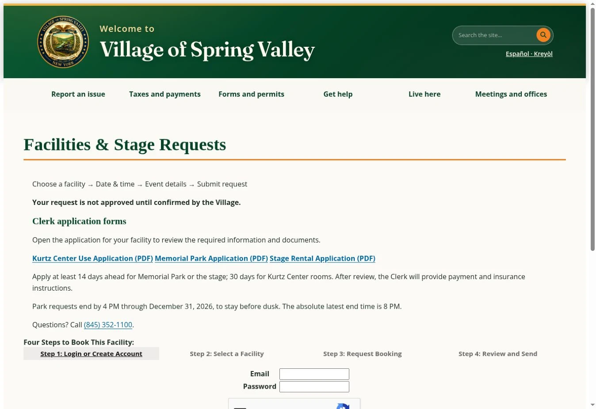
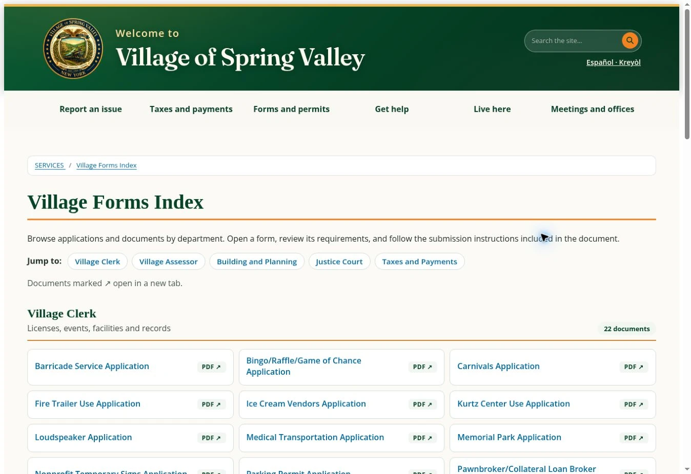

01 / Service design · Systems · Build
↑ All projectsA form is not a finished service.
A resident comes to the Village website to do something, not to learn the organization chart. Finding a form, requesting a facility, paying a fee, and getting approval should feel like one understandable service.
- Status
- Forms Index published · Booking flow tested
- My role
- Sole in-house UX and service-design lead: content audit, forms index, flow design, EvoGov configuration and testing.
- When
- 2026
- Worked with
- Clerk and departments (requirements); EvoGov vendor (platform limits).
One public index. Seven resources set up for requests.
A central Forms Index is live. The EvoGov facility workflow is configured for seven resources (Louis Kurtz Center, Darden Center, Memorial Park soccer field, Memorial Park basketball courts, Kennedy Park, Gould Park, and the portable stage) and was tested on controlled requests from new request to confirmed to cancelled, with the public calendar reserving and releasing the slot. Online payment and finer-grained staff permissions are not in place yet.
Exhibit / How a facility request moves
Before · Now · Designed nextBefore: in person only
No online request existed. Typically two to three visits to Village Hall, sometimes four.- Go to Village Hall
- Pick up a paper application
- Fill it out
- Come back with everything
- Pay at the Clerk’s office
Now: online request
Live as of Oct 2026. The page states a request isn’t approved until confirmed.- Log in or create an account
- Choose facility, date and time, and event details
- Submit request
- Clerk reviews and confirms
- Clerk sends payment and insurance instructions
Designed next
Blueprint · deploying early Nov 2026- Submit request, no account needed
- Clerk approves
- Pay online after approval
- One reference number tracks it to completion
Resident actsVillage staff acts
Exhibit / The live pages
Captured Oct 26, 2026

Both are public pages. The public page lists three facility applications. The booking portal itself requires an account, so the seven-resource configuration and the test requests aren’t visible here.
The public website as evidence
Dated records · Live pagesA public trail across the Village's website. The archived versions are point-in-time reference pages; the current links let you inspect the live task pathways and content structure. These four areas illustrate the broader service-design scope.
Homepage
Task-based routes to report problems, find forms, make payments, and locate Village services.
Village Clerk
Public notices, meeting records, Clerk forms, and a connection to the central forms index.
Assessor
Direct pathways to property lookup, exemption forms, assessment rolls, and review information.
Community Development
Team profiles, featured event flyers, newsletter bulletin, and local support links.
More historical reference pages (Building, meetings, taxes, Section 8, Mayor’s Office) +
Some dated snapshots are intermediate project states rather than pre-project baselines. Comparison links document site evolution; they do not by themselves prove authorship, increased task completion, or a completed end-to-end payment system.
The form was never the whole service.
From a paper form to a service with an actual next step.
Illustrative exchange based on the project, not a verbatim quote.
Finding the form was not the hard part. Knowing what happens after you submit it was.
Two to four trips to Village Hall.
There was no online request at all. The only way to apply was a paper application, picked up in person.
- Go to Village Hall
- Pick up a paper application
- Fill it out
- Come back with everything
- Pay at the Clerk’s office
From my review of how requests ran: about two to three trips, sometimes four, plus about two calls per request.
MY MOVEFollow the request all the way to a decision.
The resident saw a form. The Clerk saw a checklist.
What the resident expects
Pick the place, request the time, understand exactly what happens next.
What staff had to do by hand
Check dates, rules, insurance, and fees before anything could be confirmed.
I followed the form behind the counter.
- DocumentedI sat with the Clerk’s office, interviewed staff, and reviewed all of the major permit requests.
- DocumentedI audited the website’s forms and navigation and organized them into one Forms Index, with official department ownership kept.
- My readingThe missing piece wasn’t a prettier form. It was a legible handoff between residents and staff.
MY MOVEDesign for the people processing the request, too.
The ideal experience met the platform’s limits.
The ideal
Pick the place, request the time, see exactly what happens next.
What the native tools allowed
- The portal required login
- Permissions were too broad for some intended viewers
- Not every paper-form rule could be enforced automatically
- Seasonal sunset cutoffs weren’t supported as requested
Decision I worked within controls I could test and staff could operate, instead of inventing an interface nobody could maintain.
MY MOVEUse reliable platform behavior, even when it limits the ideal experience.
A request cannot pretend to be a reservation.
I put the forms online as PDFs, which saves at least one trip to pick up the application. Then I configured seven facility and stage resources in EvoGov with four distinct states, so the page never promises instant approval.
- Requested
- Approved
- Confirmed
- Cancelled
Decision Charge after approval, not at request. That is designed for the next release, and the payment integration is unverified.
Outcomes, and where this goes next.
Documented Now
- The Forms Index is live
- Seven resources are configured for public requests
- Controlled tests ran a request from new to confirmed to cancelled, and the public calendar reserved and released the slot
Testing and refinement continue.
Next Coming up
- Online payment after approval (designed, scheduled for early Nov 2026)
- Request without an account
- Finer-grained staff permissions
- Usage or completion data
MY MOVEShow the part that works. Be clear about what comes next.
What this says about the system.
The visible page was only half the problem.
My reading A simpler resident experience only holds up when staff can receive the work, interpret its status, and carry it to completion.
What I owned
I organized forms into a central index, reviewed task navigation and homepage hierarchy, and translated paper facility rules into a native request workflow. I mapped the resident and Clerk steps, including a future approval-before-payment model, then tested calendar states and holidays and documented what still needs staff or vendor support.
The reframe
It isn’t enough for a resident to find the right form. The institution has to know what happens after they submit it.
Where it stands
The native portal still requires an account. PayIt approval-to-payment integration, granular staff permissions, and several paper-form validations are not implemented. The single-reference-number, no-account flow in my October 2026 blueprint is the next release, scheduled for early November 2026, not the running system as of this writing. There is no usage or completion data yet.
Explore the decisions and tradeoffs
- Organize by department or by task?
- Chose: a common Forms Index, with official departmental ownership retained.
- Let residents “book,” or request approval?
- Chose: explicit request and confirmed states, so the page never promises instant approval.
- Force custom functionality, or use native CMS features?
- Chose: a tested, maintainable native flow, with the limitations recorded.
- Payment at request or after review?
- Designed, next release: charge after approval. PayIt integration is unverified.
Read the full write-up (about five minutes)
A resident comes with a task
A resident looking for a permit shouldn’t need to know which department handles it before they can begin. But municipal websites often reflect how government is organized internally rather than how residents experience a need. In Spring Valley, forms, payments, department pages, and service instructions lived in different places. The challenge wasn’t only visual inconsistency. A resident could find a document and still have no clear idea how to finish the task.
I followed the path beyond the link
I reviewed the website’s navigation, organized a public Forms Index, and worked on homepage hierarchy and access to common services. Facility requests became a useful test of the whole system, because the process had no online path at all. A resident needed to select a facility, choose a date, explain the event, and wait for staff approval. Behind the scenes, someone had to check availability, insurance, fees, and scheduling rules.
What I had to give up
My ideal experience was simple: pick the place, request the time, understand exactly what happens next. EvoGov’s native tools imposed real limits. The portal required login, permissions were too broad for some intended viewers, not every paper-form rule could be enforced automatically, and seasonal sunset cutoffs weren’t supported as requested. I worked within the controls we could validate instead of inventing an interface staff couldn’t operate.
The observable result
The Forms Index went live. Seven facility and stage resources were configured for public requests. Two controlled test records exercised confirmation and cancellation, and the public calendar reflected those status changes. That is a usable foundation, not a finished payment-and-permit service. The October 2026 flow map describes the next release, scheduled for early November 2026, with one reference number and approval before payment; it is not the operating system yet.
What stayed with me
The visible page was only half the problem. A simpler resident experience holds up only when staff can receive the work, interpret its status, and carry it to completion.